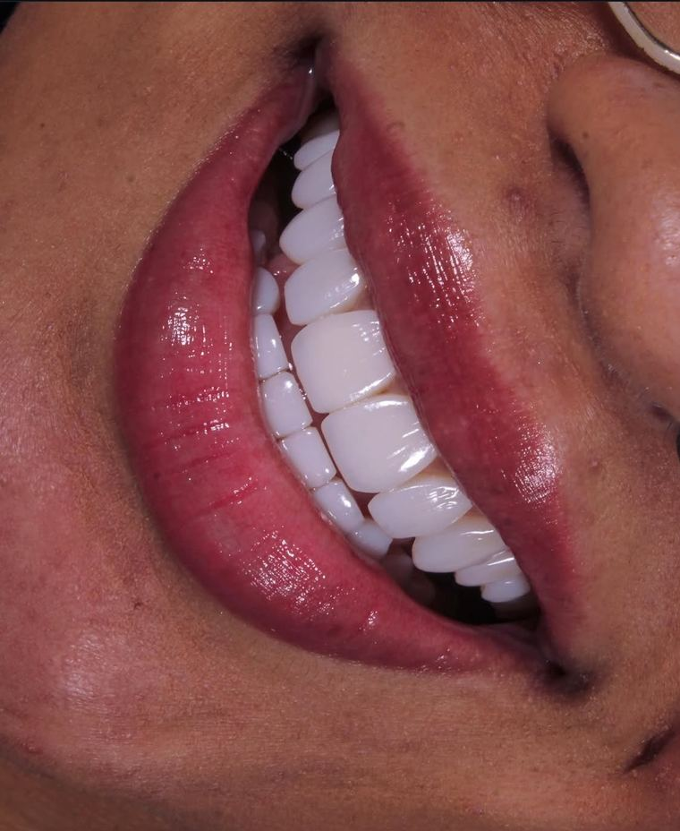

Lentes em resina · Santana, SP
Seu sorriso, mais natural e harmônico.
Lentes em resina estratificadas, esculpidas à mão livre, camada por camada, em sessão única, preservando a estrutura dos seus dentes.
- Sessão únicasai com o sorriso novo no mesmo dia
- Mão livrecada dente esculpido sob medida
- Conservadorsem desgaste da estrutura dental

 AntesDepois
AntesDepois
Arraste para comparar · paciente da clínica
Resultados reais
Sorrisos feitos aqui, um a um
Cada lente é esculpida em resina, camada por camada, para combinar com o formato do rosto, a cor da pele e o jeito de sorrir de cada pessoa.
AntesDepois

Fotos de pacientes da Clínica Tajy, publicadas com autorização. Os resultados variam de pessoa para pessoa e dependem da avaliação clínica.
Ver mais casos no InstagramPor que resina
Um tratamento pensado para preservar você
Preserva o dente
A resina é aplicada sobre o dente, sem desgaste da sua estrutura natural.
Sessão única
Você entra com o sorriso de antes e sai com o sorriso novo no mesmo dia.
Feito à mão livre
Cada dente é esculpido sob medida, com formato e cor planejados com você.
Procedimento confortável
Atendimento tranquilo, com anestesia quando necessário, explicado passo a passo.
Quem cuida do seu sorriso
[Dr(a). Nome Sobrenome]
Cirurgiã(o)-dentista · Odontologia estética
[Escreva aqui 2 ou 3 frases em primeira pessoa: por que escolheu trabalhar com lentes em resina, como é o seu cuidado com cada paciente e o que você mais gosta no resultado.]
- [Formação: Odontologia, Universidade X]
- [Especialização ou cursos em dentística / resina estratificada]
- [Há X anos trabalhando com estética dental]
Passo a passo
Como funciona
Fale com a gente
Chame no WhatsApp e escolha o melhor horário para a sua avaliação.
Avaliação e planejamento
Analisamos o seu sorriso e definimos com você o formato e a cor das lentes.
Sorriso novo
As lentes são esculpidas à mão livre, em sessão única, direto nos seus dentes.
Acompanhamento
Orientamos os cuidados em casa e as revisões para manter o resultado bonito.
Quem já fez
O que nossos pacientes contam
“[Depoimento real do paciente, de 1 a 3 frases, com as palavras dele.]”
“[Depoimento real do paciente, de 1 a 3 frases, com as palavras dele.]”
“[Depoimento real do paciente, de 1 a 3 frases, com as palavras dele.]”
Precisa desgastar os dentes?
Na maioria dos casos, não. A resina é aplicada sobre o dente, preservando a estrutura natural. Isso é confirmado na avaliação, conforme o seu caso.
Dói?
O procedimento costuma ser confortável. Quando necessário, usamos anestesia local, e tudo é explicado antes de começar.
Quanto tempo duram as lentes em resina?
A durabilidade depende dos cuidados em casa, dos hábitos (como ranger os dentes, café e cigarro) e das revisões periódicas. Na avaliação explicamos o que esperar no seu caso.
A resina mancha?
Com o tempo, a resina pode perder brilho ou pigmentar, principalmente com café, vinho e cigarro. O polimento nas revisões ajuda a manter a cor e o brilho.
Qual a diferença entre lente de resina e de porcelana?
A resina é feita direto no dente, em sessão única, e permite reparos simples. A porcelana é feita em laboratório, em mais sessões, e costuma ter outro custo. Na avaliação indicamos a melhor opção para você.
Quanto custa?
O valor depende de quantos dentes serão feitos e do planejamento do seu sorriso. Ele é passado na avaliação, junto com as formas de pagamento.
Vamos planejar o seu sorriso?
Tire suas dúvidas e marque um horário para a avaliação. O atendimento é pelo WhatsApp.
Onde estamos
Em Santana, Zona Norte de São Paulo
- Endereço
- Rua Voluntário da Pátria, 1284
Santana, São Paulo, SP · CEP 02010-200 - Horário
- [Seg a sex, 9h às 19h · Sáb, 9h às 13h]
- Agendamentos
- Somente pelo WhatsApp